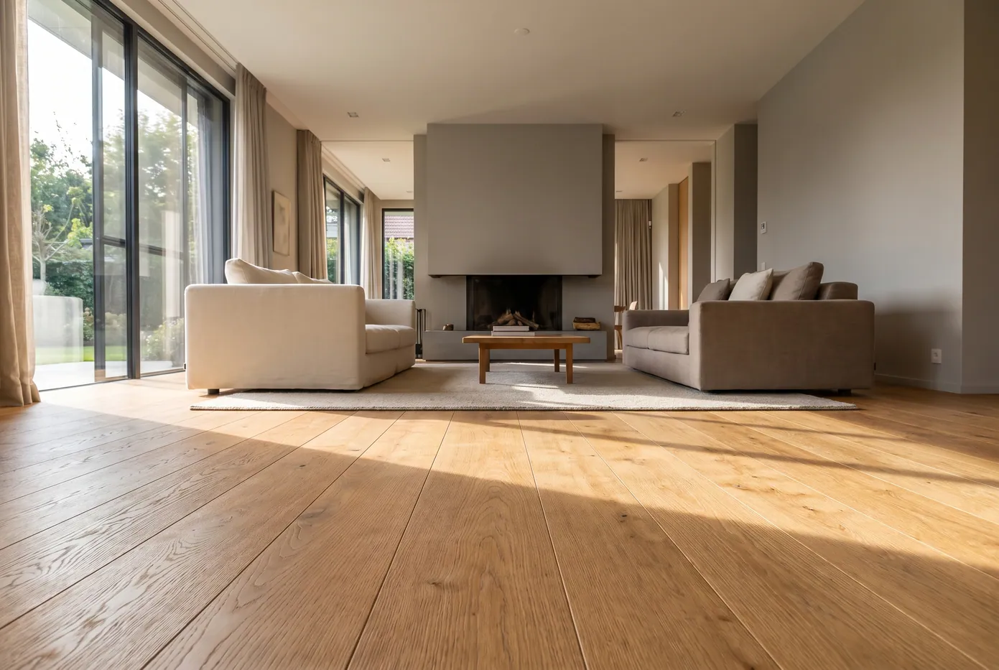
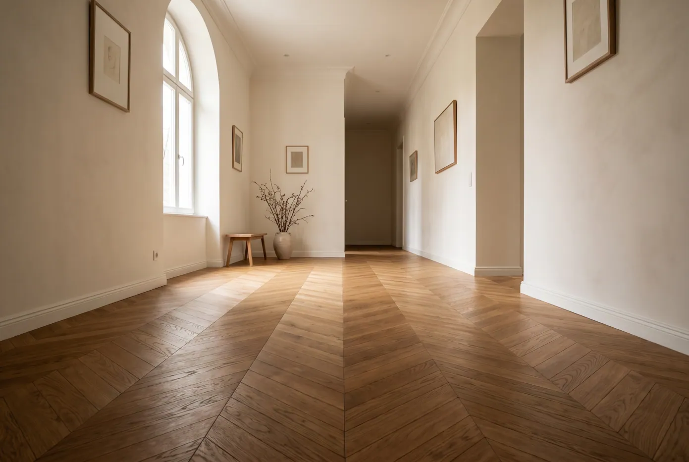
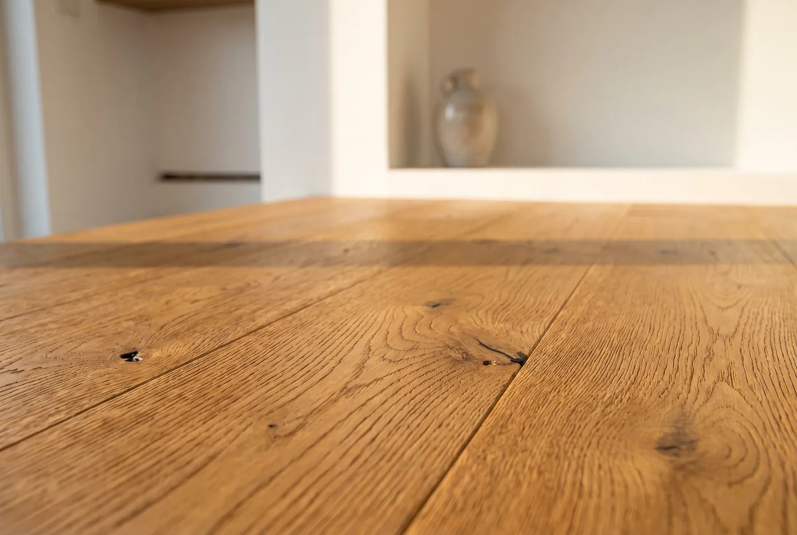
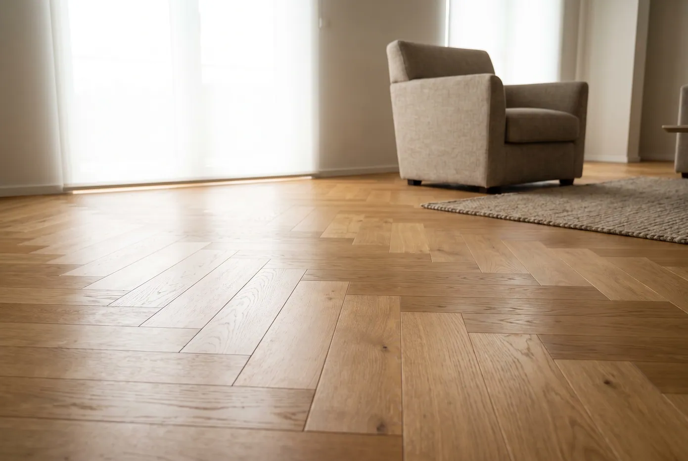
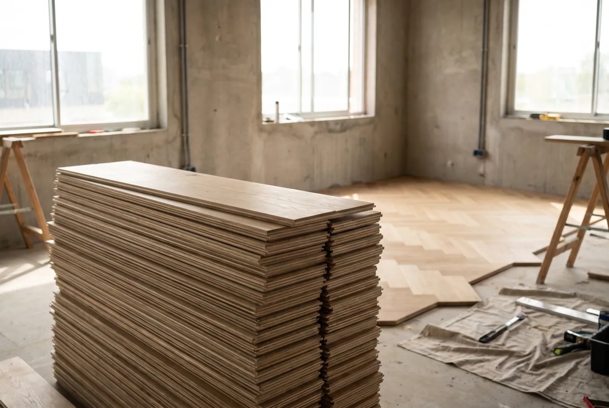
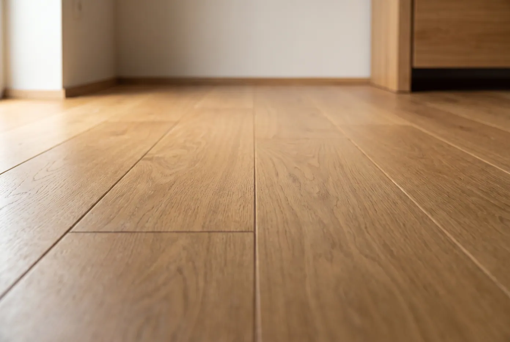

Caratteristiche
Ogni pavimento nasce da tre decisioni: l'essenza, il disegno di posa e la finitura. Sono queste tre scelte, non il prezzo del metro quadro, a determinare come il legno invecchierà nei prossimi trent'anni. Qui sotto le lavorazioni che eseguiamo di serie, tutte disponibili su ognuna delle nove essenze del nostro catalogo.

Parquet Rovere
Rovere europeo di prima scelta, stagionato e selezionato listone per listone. La fibra compatta garantisce stabilità dimensionale e resistenza all'usura nel tempo; la venatura naturale — dal fiore cattedrale alla rigatura verticale — copre una gamma cromatica che va dal naturale chiarissimo al fumé. Disponibile in larghezze maxi e lunghezze fuori standard su richiesta.

Lisca di pesce
La posa a lisca di pesce — italiana a 90°, francese o ungherese a 45° e 60° — è il modo più raffinato di far lavorare la luce sul legno. Ogni listello viene tagliato con tolleranze millimetriche perché il disegno resti perfettamente chiuso lungo tutta la stanza. Un pattern intramontabile, che valorizza tanto un appartamento storico quanto un contract di alto profilo.

Spazzolato
La spazzolatura asporta meccanicamente la parte più tenera del legno primaverile e lascia in rilievo la fibra dura. Il risultato è una superficie viva al tatto, con una profondità che nessuna finitura liscia può restituire. In più il rilievo maschera micrograffi e segni d'uso: un pavimento che invecchia bene, invece di consumarsi.

Olio UV a 3 strati
Tre passaggi di olio polimerizzato ai raggi UV: il primo penetra e nutre la fibra, i successivi costruiscono una protezione che regge acqua, macchie e traffico intenso. A differenza di una vernice filmogena l'olio non crea una pellicola — il legno resta legno — e un eventuale danno si ripara localmente, senza levigare l'intero ambiente.

Prefinito
Il prefinito arriva in cantiere già levigato e finito in fabbrica, in condizioni di temperatura e umidità controllate: un livello di qualità che sul posto non è replicabile. Si posa e si cammina lo stesso giorno — zero polveri di levigatura, zero odori di finitura, zero tempi morti. Il supporto multistrato incrociato lo rende inoltre ideale sopra impianti radianti.

Bordo vivo
Il bordo vivo, non smussato, è la scelta di chi vuole una superficie continua. Le giunzioni si chiudono a filo e l'occhio legge il pavimento come un piano unico, non come una somma di listoni. Richiede una lavorazione più precisa in produzione e un massetto perfettamente in piano: per questo è il dettaglio che distingue i progetti di alto livello.